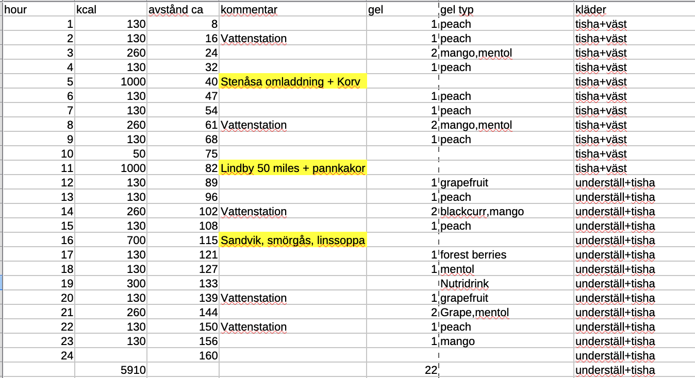
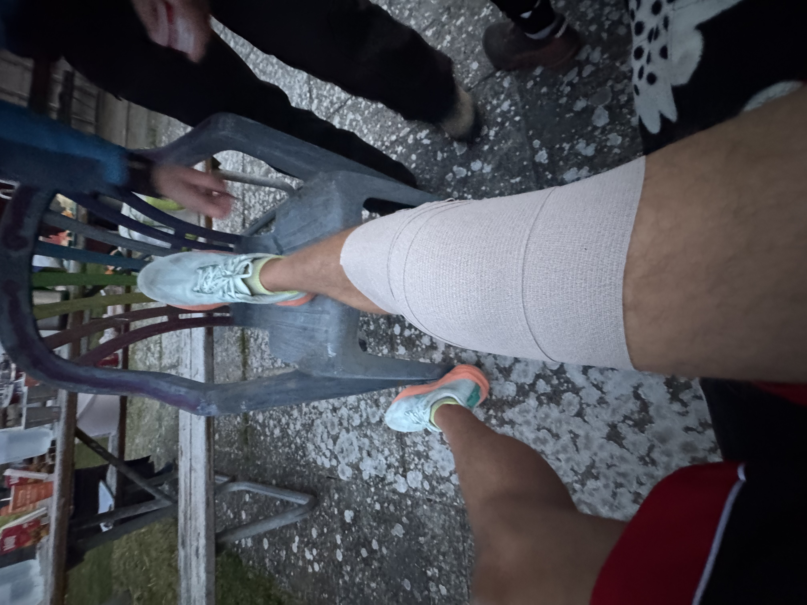
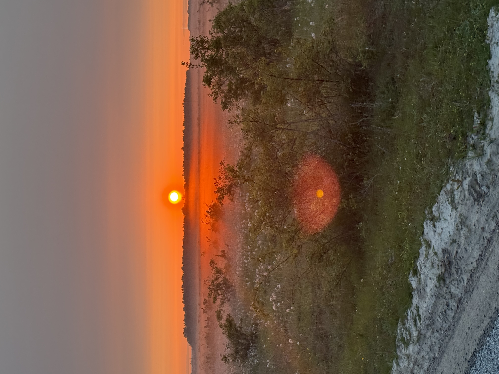
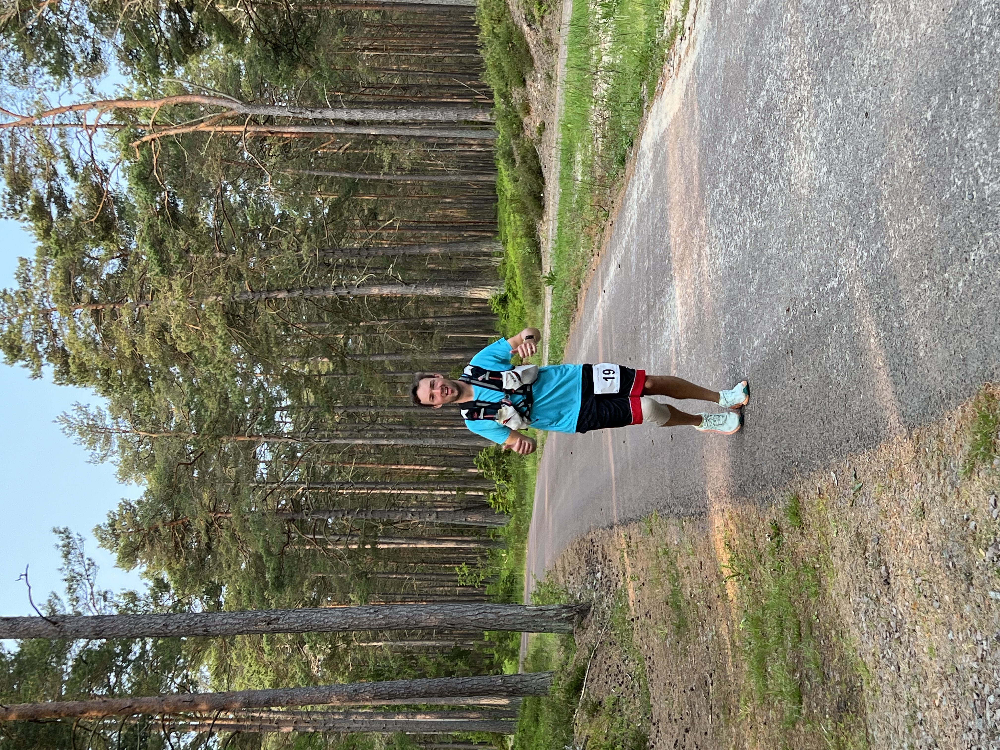
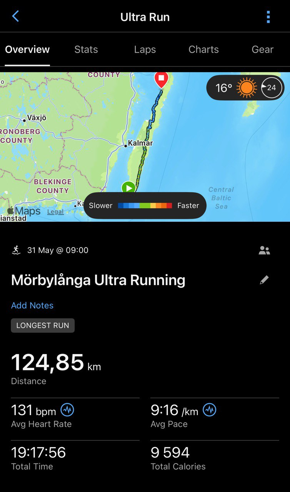
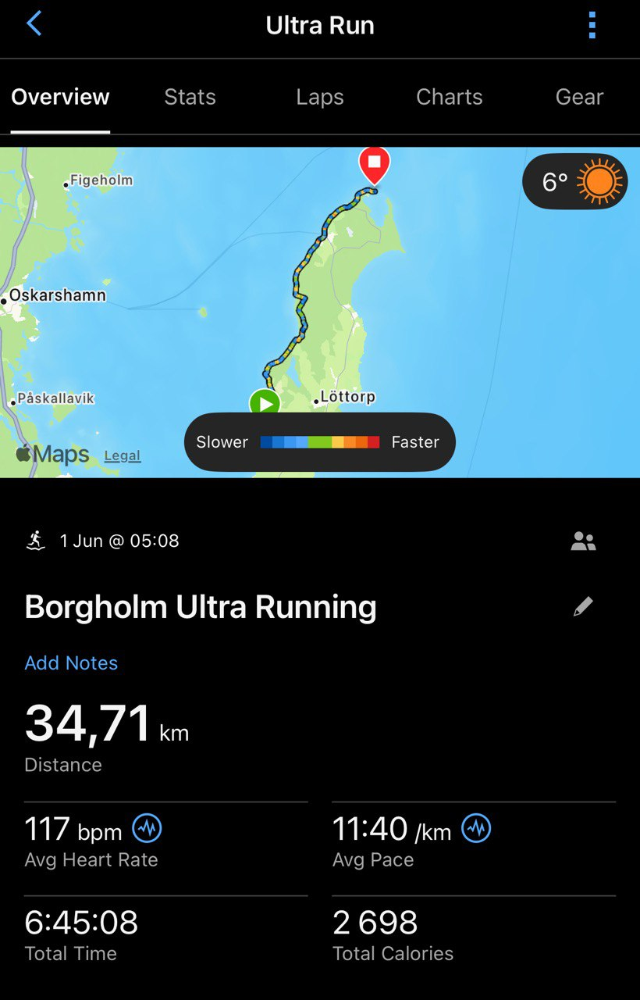

Livets lopp: Öland Lighthouse Challange 100 miles 2025
Öland Lighthouse Challange 2025 sammanfattad upplevelse
- Ballt att få se hela öland i ett svep
- Ett lopp där man är “on your own” i stor utsträckning
- väldigt stor skillnad mellan sthlm maraton eller ultravasan
- stationer ungefär varannan mil, mycket self-service
- kändes som de flesta var volontärer och det var viktigt att kunna ta hand om sig själv när du kommer till en station
- Ca 45 deltagare, 27 i mål
- Min tid: 26 timmar, 46 minuter
- Distans 161 km eller 100 miles
För vem är loppet bra för? Loppet är bra för den som har tillgång till en support som kan köra bil för att släppa vid start och kunna ge lite stöd under dygnet som loppet pågår. Det är till för den som vill springa en “enkel” 100 miles eftersom att det är så otroligt platt på öland så är det väldigt lättsprunget. Öland är även väldigt vackert, det är inte så fruktansvärt varmt eller kallt, det är inte mörkt särskilt länge på natten eftersom det är ganska nära midsommar. Allt detta förutsätter förstås att du är galen nog att springa 100 miles.
Inför loppet
- Träningen inför, hur jag tränade, från starten av året till loppet
- Sprang genom hela vintern, ca 4-5 mil i veckan
- Körde runt 5 mil i veckan, med två veckor med lägre intensivitet i mitten under våren
- Planen under loppet, energi och strategi för att ta sig i mål
- energi: ca 20 gels
- 2700 kcals på stationerna
- Nutridrink (300 kcal)

Planerade helt enkelt att försöka äta 1000-700 kcal på stationerna, det misslyckades totalt. Istället blev det lite extra mat från min Pappa som var min support.
Tidsmässigt var planen att ta sig till Lindby (50 miles), på ca 11 timmar, vilket jag tror nästan lyckades, vi var där 20 minuter försent. Det fanns en cut-off där det var krav på att ha pannlampa från 21:00-4:00, den hade jag i Lindby så det var ett minimum att ta sig dit innan 21:00, annars kände jag att jag var för svag för att klara natten.
Planen för andra halvan, från 80-161 km var att helt enkelt försöka köra på med så hållbar stil som möjligt. Detta går att underlägga genom att försöka göra det lätt för mig själv att följa energiplanen, att ha rätt mängd kläder och försöka förutse de flesta scenarion som kan hända.
Precis innan loppet, ca en månad då uppladdningsfasen borde ta fart, så minskade min träningsmängd väldigt mycket och jag kände att jag började nå en toppform för tidigt. Jag tror att jag var precis på toppen ca 2 veckor innan starten, detta var en bladning mellan mycket jobb och resor i kombination med för lite löpning. Sista två veckorna spenderades med väldigt lite löpning.
Dagen började närma sig och det var dags att dra till Öland. Det var tydligen högsäsong för fågelskådare så många boenden var tagna av fågelskådare. På boendet i Degerhamn var hälften löpare och hälften fågelskådare.

Det var en smooth check-in.
Under loppet
Starten var enkel, många drog iväg i en högt tempo (4:30-5:00/min/km) som jag direkt kände var på tok för högt för att vara hållbart under loppet. Första 3-4 milen var ingen större problem, men jag kände att jag började få sug efter salt. Vid 4 mil såg jag att det inte fanns någon salt, så lösningen fick bli att försöka äska fram salt av andra löpare. Det var ganska framgångsrikt då jag fick i mig ett par tabletter så vid 5 mil kändes det väldigt bra igen. Solen sken under hela dagen och det var runt 16 grader med lätt vind vilket var väldigt härligt.
Vid 6-7 mil började det kännas allt tuffare, värken i musklerna blev intensivare, samtidigt som det faktiskt inte blev väldigt mycket sämre utan var ganska konstant dåligt. 80 km in var vi halvvägs in, klockan var runt 20:20. Då fick jag möjigheten att byta skor och styra om till “kvällskläderna” med pannlampa. Tog tillfället att dricka mängder med kaffe, salt och vätskeersättning samt käka ett par pannkakor.
Resan fortsatte, in i natten och samma strategi gällde med 25:5. Denna strategi höll i sig tills 100 km då det var dags att sakta ner lite och köra på en mer chill strategi med 15:5, för att senare bli närmare 10:5. 115 km in, på den norra sidana av ölands steniga kust så började jag känna att mitt högra knä började svälla. Jag ignorerade det fram tills Sandvik på 118 km, då det var en matstation igen. Knät var svullet och någon annan löpare sa att det där är ett under om jag tar mig i mål med det knät.

Med lite flax var den en person som verkade ha koll på läget som började undersöka mitt knä och landade i att det borde gå att linda, så en ipren på det var det bara dags att köra på. Det var den djupaste svackan jag var igenom under loppet, men genom att ta korta mentala steg så gick det även att ta sig ur det. Resultatet blev att halta vidare i två km, för att sedan börja köra på 10 min jogging och 5 min gång. Klockan var runt 4 på natten och det var dags för solen inviga nästa dag.

Sista milen var tuffa, fast inte likt tuffa som det verkade vara för andra. Jag kände att det var helt ok efter att ha lindat foten, men min kompanjon som jag sprang med hade det desto kämpigare. Eftersom vi körde så långt av loppet tillsammans kändes det inte rätt att bara dra iväg efter 13-14 mil.

Sista milen in mot Öland norra fyr präglades av strålande sol igen, vilket jag kände inte behövdes efter att ha fått otroligt mycket sol på mig dagen innan, men det var skönt att slippa stark vind och regn. När det var ett par hundra meter kvar till mål kändes det väldigt skönt att det snart var över och det är en lättnad att se fyren.

Tacksam för att jag tog mig hela vägen! Skönt att få sin finisher tröja och medalj!

Reflektioner efter loppet
Jag trodde inte att jag skulle klara det, ändå gjorde jag det. Det var pannben och ben som krävdes. Det handlar om att överleva de värsta svackorna som man är med om, det handlar inte om att man ska klara sig i “snitt”, utan det är i de djupaste mentala dalarna som man är nära på att ge upp. Går man över en viss tröskel så är det kört, då det gäller att hålla sig tillräckligt levande för att inte gå över gränsen.
Att springa ultra är alltid en berg- och dalbana för alla känslor, du hinner uppleva väldigt mycket under ett lopp. Det är tufft, det är lätt, det är vackert och det är riktigt surt. Det som är häftigt är att du får tid tid till att utforska dig själv och du får tid till att se dig själv i tredje person. Diskussionerna med dig själv, att livet är miserabelt och att det är underbart går att observera från sidan, allt du behöver göra är att se till att fortsätta så kommer du att ta dig till en ny plats, precis som det vanliga livet förutom att ultra tar bara en bråkdel av tiden.
Det som jag lärt mig är att det är värt att sätta upp mål som är högre än vad man tror att man kan ta sig an, det är bättre att sträcka sig till mars och sedan ta sig dit eller till månen. En annan sak som är så faschinerade med att köra ett långt löplopp är att ingen eller få andra verkar kunna relatera till det. alltså det är en helt annan grej än att springa ett maraton, som också är en tuff grej på sitt sätt, men det är verkligen något helt annat.

Garmin klockan (Forerunner 965), var på gång att ladda ur under loppet så jag försökte ladda den men det blev tyvärr så att loppet sparades vid 125 km. Sista delen kördes som en egen aktivitet som jag sedan slog samman som en manuell aktivtet. Mobilen laddade ur också.

Till nästa gång hade det varit bra att försöka ladda klockan och ta bort touchen så att den inte sparas när det ligger i fickan. Det vore bra att ha en powerbank till telefonen, jag hade det i början men det var när jag fortfarande hade mer än 85 procent batteri så det var inte värt att ladda den. Det är någon balans mellan att ha kräm i telefon och klockan samtidigt som man inte vill väga för mycket. Kanske skulle en platt powerbank vara bättre en min cylinder powerbank.
En annan lärdom är att försöka förstå loppet på djupet, det var förstås i uppenbart att Öland Lighthouse Challange är en ganska unsupported tävlning, men det hade inte riktigt trängt sig hela vägen in i huvudet på mig. Jag hade fortfarande någon förväntan att det skulle vara ett bord fullt med korv när jag kom fram till stationen vid Stenåsa, men det är inte så det fungerar förutom på stora lopp eller när man har en dedikerad support.
Det är värt att sätta upp mål som är högre än vad man tror att man kan ta sig an